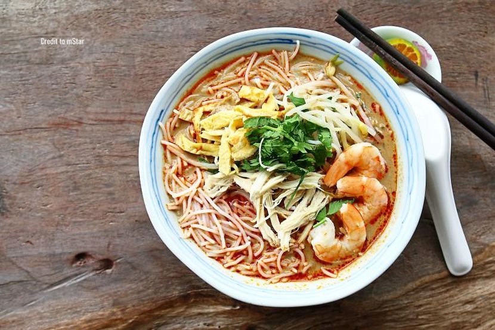
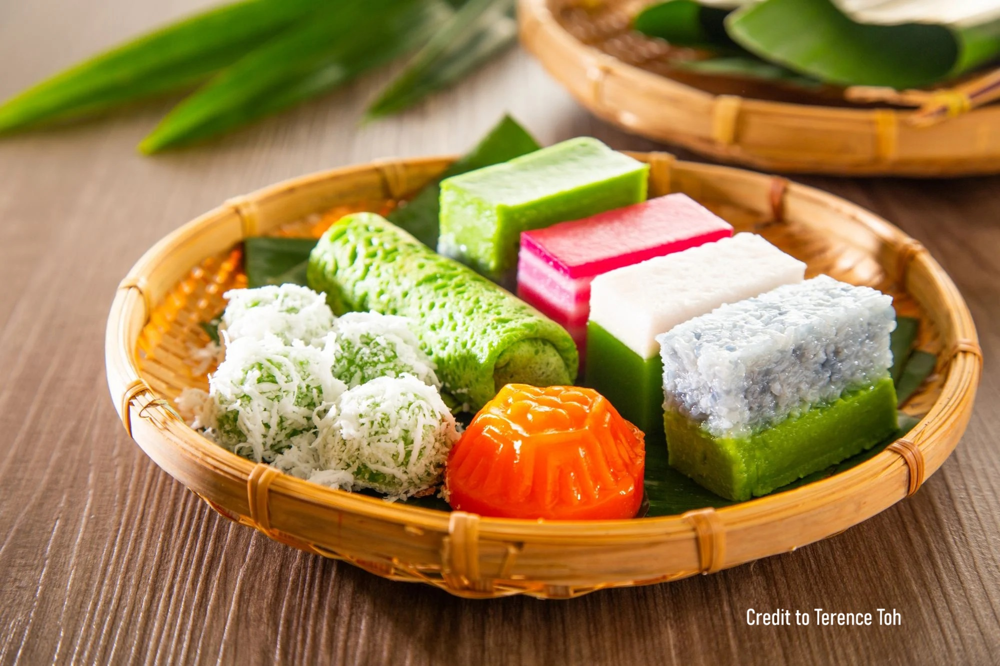

Festival and Celebration in Sri Aman
Sri Aman is a town in Sarawak, Malaysia. This city is famous for its rich heritage and culture, representing the amalgamation of native communities and their traditions. Sri Aman is home to various indigenous communities, including the Iban, Malay, Chinese, and Bidayuh. Each community contributes to the cultural tapestry of the region through unique customs, languages, and traditions.
Gawai Dayak
Gawai Dayak is a significant festival celebrated by the Iban and Bidayuh communities in Sarawak, including in Sri Aman. It marks the end of the harvest season and serves as a time for giving thanks for the bountiful harvest. The festival begins on the evening of May 31st and continues into June 1st.
Activities and Traditions:
- Miring Ceremony: A ritual to honor and appease the spirits, ensuring blessings for the coming year.
- Traditional Music and Dance: Performances such as the Ngajat dance, accompanied by the music of traditional instruments like the sape.
- Feasts: Elaborate meals featuring traditional dishes such as manok pansoh and various rice-based delicacies.
- Open Houses: Families open their homes to friends and visitors, sharing food, drink, and hospitality.
- Tuak (Rice Wine): A traditional rice wine brewed for the occasion, often shared among attendees.
Pesta Benak (Tidal Bore Festival)
Pesta Benak is a unique festival held in Sri Aman to celebrate the natural phenomenon of the tidal bore. This event occurs when the high tide creates a wave that travels upstream against the river's current. Sri Aman is one of the few places in the world where this phenomenon can be observed.

The Tidal Bore Phenomenon:
- What is a Tidal Bore?: A tidal bore is a surge of water that travels against the natural current of a river due to the incoming tide. It typically occurs in areas with a narrow and shallow river mouth, where the incoming tide is funneled and creates a noticeable wave.
- Sri Aman’s Tidal Bore: Known locally as benak, this tidal bore can create waves up to several feet high, attracting both locals and tourists who gather to witness the spectacle.
Festival Activities:
- Boat Races: Traditional longboats and modern speedboats compete in races on the Batang Lupar River, riding the tidal bore waves.
- Cultural Performances: The festival features a variety of cultural performances, including traditional dances, music, and drama that reflect the local heritage.
- Competitions: Various competitions are held, such as fishing contests, beauty pageants, and traditional games.
- Food and Craft Stalls: The festival grounds are lined with stalls selling local food, handicrafts, and souvenirs, providing a festive atmosphere.
Handicrafts in Sri Aman
Sri Aman is renowned for its rich tradition of handicrafts, particularly those created by the Iban community. These artisanal products reflect the deep cultural heritage and artistic skills passed down through generations. Two of the most notable handicrafts from this region are Pua Kumbu and wood carvings.

Pua Kumbu is a traditional handwoven textile created by the Iban community. These textiles are known for their intricate patterns and vibrant colors, often incorporating symbolic motifs that hold cultural and spiritual significance. Authentic Pua Kumbu can be found in local markets and specialized craft shops in Sri Aman. The Sarawak Craft Council also promotes and sells these textiles, ensuring the preservation of this traditional art form.
The Iban community is also known for its detailed wood carvings. These carvings are typically made from locally sourced hardwoods and depict a range of subjects, including flora, fauna, and mythological figures. Traditional wood carvings can be purchased from local artisans in Sri Aman, as well as in craft markets and galleries. These carvings make unique souvenirs and are a testament to the skilled craftsmanship of the Iban community.
Purchasing these handicrafts not only provides a unique and culturally rich memento but also supports the local artisans and helps preserve these traditional art forms. Visitors to Sri Aman are encouraged to explore the local markets, participate in craft workshops, and engage with the artisans to gain a deeper appreciation of the region’s cultural heritage.
Cuisine in Sri Aman
The cuisine in Sri Aman is a vibrant reflection of its cultural diversity, drawing influences from the indigenous Iban, Malay, and Chinese communities. Here are some detailed descriptions of notable dishes:
Manok Pansoh
Manok Pansoh is a traditional Iban dish where chicken is cooked in bamboo. The preparation involves marinating the chicken with lemongrass, ginger, garlic, and other local herbs, then placing it inside a bamboo tube, which is sealed with leaves and cooked over an open fire. This method imparts a unique, smoky flavor to the chicken, making it tender and aromatic. For an authentic experience, try this dish at local eateries that specialize in traditional Iban cuisine or during cultural festivals and celebrations.
Laksa Sarawak
Laksa Sarawak is a renowned spicy noodle soup that boasts a rich, flavorful broth made from a blend of sambal belacan (chili paste), sour tamarind, garlic, galangal, lemongrass, and coconut milk. The dish is typically served with rice vermicelli, shredded chicken, prawns, bean sprouts, and a garnishing of fresh coriander and lime. It's a harmonious mix of tangy, spicy, and creamy flavors. The best places to savor Laksa Sarawak in Sri Aman include local coffee shops and food stalls, such as the well-known Kedai Kopi Tian Hua or Warong Kak Nah.
Kuih-Muih
Kuih-muih encompasses a variety of traditional Malay and Chinese pastries and sweets. Some popular types include:
- Kuih Lapis: A colorful, layered cake made from rice flour, coconut milk, and sugar.
- Kuih Seri Muka: A two-layered dessert with a base of glutinous rice topped with a custard layer made from coconut milk and pandan juice.
- Kuih Cincin: A ring-shaped fried pastry coated with brown sugar.
These delicacies are often enjoyed during tea time or festive occasions. For the best kuih-muih, visit local markets such as the Sri Aman Wet Market or small bakeries and stalls like Kedai Kuih Muih Sri Aman.
Recommendations for Places to Eat
Restoran Sederhana (Tandang Sari): Known for its wide array of traditional Malay and Iban dishes, including Manok Pansoh and various types of kuih-muih.
Kedai Kopi Tian Hua (Chung Hua Food Court): A popular spot for Laksa Sarawak and other local favorites. It's a great place to experience the local coffee shop culture.
Warong Kak Nah (Selera Melaya Cafe): Famous for its authentic Malay cuisine and kuih-muih, offering a cozy atmosphere and delicious traditional treats.
Sri Aman Wet Market: Ideal for exploring a variety of local foods, including fresh produce, cooked dishes, and traditional snacks. It provides a bustling and authentic experience of the local culinary scene.

These places not only serve delicious food but also offer a glimpse into the rich culinary traditions of Sri Aman.